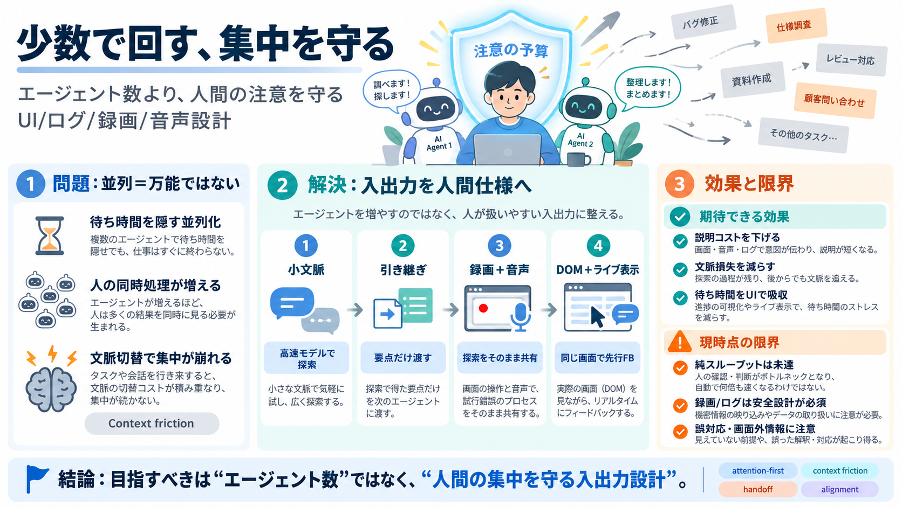

AI Agent Architecture: 7 Patterns You Need to Know in 2026
AI Agent Architecture is the structural design of an AI system that uses a language model to reason, take actions throug…

人の同時処理が増え、フロー（集中状態）が途切れる
待ち時間の管理が“作業”になる（タスク管理がボトルネック化）
注意（Attention）を消費する設計は、スループットを押し下げる
遅延は“人の注意”を壊さないUI/入出力で吸収する
人が入力しやすい／AIが理解しやすい形に、やり取りを再設計する
コンテキスト損失と精神的摩耗（mental fatigue）を減らす
高速モデル：小文脈で探索・一次整理
高能力モデル：要点だけを受けて深掘り
人の強み（具体を見ながら考える）をそのまま転送し、説明コストを下げる
画面の変化と発話を同期して、意味の対応を作る
閲覧・スクロール・ポインタ・クリック・ハイライト
テキスト線形ログより意味のある構造へ変換しやすい
別タブ待ち・文脈切替で集中が崩れる
同一面内で反応を受け取り、注意の切替を抑える
純スループット：多人数並列に対して勝てない
注意と文脈の維持：人のボトルネックを戻しつつある
並列否定ではない：注意の消費がボトルネックになる
ライブ表示：別で待たずに同じアーティファクト内で受け取る
録画/DOM/音声は運用設計が必要（機密・保存・権限）
“必ず理解”ではない：画面外の情報や誤対応で不足が起きる
提供本文：少数エージェント×人間中心入出力の主張
エージェント設計でのレイテンシ/観測性/オーケストレーション評価の一般論
認知負荷・エラー率・満足度・学習コスト・運用コストを追加検証
録画/DOM/音声ログは安全・プライバシー要件が必須
AI Agent Architecture is the structural design of an AI system that uses a language model to reason, take actions throug…
Parallel Workflows: A group of AI agents performs tasks asynchronously and simultaneously. The concept is similar to mul…
Across every section, the same few decisions do the heavy lifting, and they are made early: which tools the agent can re…
Graphs are a complement to vector search, not a replacement. A 2026 survey on agents and graphs frames it directly: "Age…
Refer to caption Figure 9. Optimization Problem for AI Agent Fig. 9 provides an optimization-oriented view of agen…